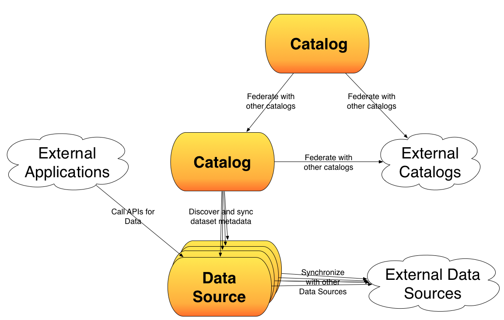

What is an Open Data "Substrate"?
The goal of this organization is to provide a forum and a place to create standards so Open Data implementors can make sure they are building systems that can inter-operate. This drives from a fundamental belief that “data is more useful” when “more people can use it”. To help achieve that goal, we need standards and agreements so an organization opening their data on any open data product will have the benefit of it being able to replicate or be referenced from any other open data product.
We call this a substrate, because we believe these are the required standards needed to prevent lock-in and provide the base that higher level knowledge networks and applications can be built on top of.
The current challenge in the market is that we run a risk of API fragmentation, and lack of interoperability. As more companies and products enter the market, we run the risk of this getting harder, not easier. Imagine a few years down the line. If there are 4 different vendors and 6 open source projects. If none of them share the same APIs or none can federate we go back to creating a bunch of data stove pipes, instead of an open network of data.In short, we will be making it harder for people to ultimately use this data, so we will be making the data less valuable.
We need something that looks more like an Open Data Network, rather than thousands of Open Data sites.
Why Not a Traditional Standards Organization?
We want everyone to get a voice, but decisions to be made as a meritocracy. Sound like how Open Source Software works? That's not by accident. Many of the people working on Open Data are working in Open Source. In addition, many don't have the money required to join traditional standards organizations. Here's the approach we suggest:
- Specifications are written and stored in Git.
- Issues with standards can be created as issues and will be debated and resolved as software issues would be
- Use the Open Data Standards Google Group
- In general, operate like an open source community.
What do we want to solve?
There are a number of use cases that are coming to light, that we would like to be able to support:- Super Catalogs for browsing diverse datasets
Datasets can be organized in many different ways. Imagine a dataset like Chicago Crimes, where it is published by the City of Chicago and surfaced by the Chicago's data catalog. However, there are several other communities of researchers or citizens that may be interested in it. Many of these communities want to create more specialized data catalogs that don't necassarily host the data, but point their members to all the relevant datasets located elsewhere. For example, organizations interested in a Chicago Crime dataset may be: researchers interested in crime around the US, researchers interested in big cities around the world, people living in Chicago may be interested in it, organizations trying determine "livability" for cities may be interested in it, etc.
These organizations should be able to create their own catalogs, that include other datasets while being able to keep in sync with changes in metadata (such as new formats, views, derived datasets, etc.). We would like to support protocols, so that anyone creating a super catalog would be able to federate and see changes in a uniform way (regardless of vender or version)
- API lists for exposing what APIs are exposed
Organizations like the federal government are pushing towards an API-first approach to building out their infrastructure. Many of these APIs are primarily built to expose data, however, given the large number of datasets it is critically important that these APIs can be gathered and managed in automated fashions across a diverse set of implementations. We will support protocols and formats to describe the APIs, so they can be programmatically gathered for any organization aggregated, put in catalogs, etc.
- Data Querying
As the number of APIs on top of data increases, we would like to standardize on the languages and protocols used to query and update data. So, if Yelp begins using an API on Restaurant Inspection Data, they should be able have a standard query language that can work across any Open Data implementation.
- Data Federation
Some organizations or people may be interested in having some datasets stored locally. This may be because they have expensive analytics they need to run, they may want to experiment with "learning" approaches, or they may simply want to have a back-up. We would like to provide the protocols so that anyone looking to federate data will be able to keep in sync with changing data sets.
Abstactions
 There are two main abstractions in Open Data Solutions right now:- Catalog
- Data Store